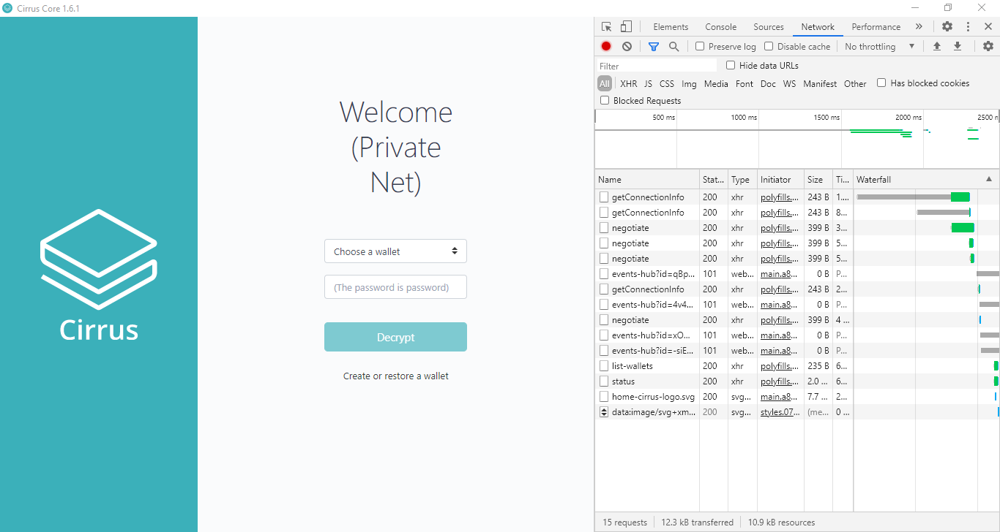
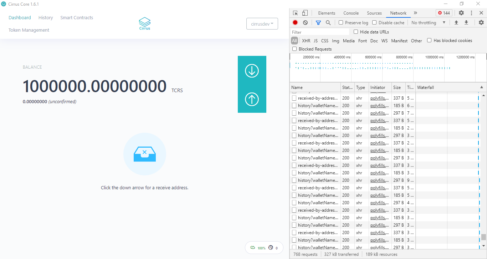
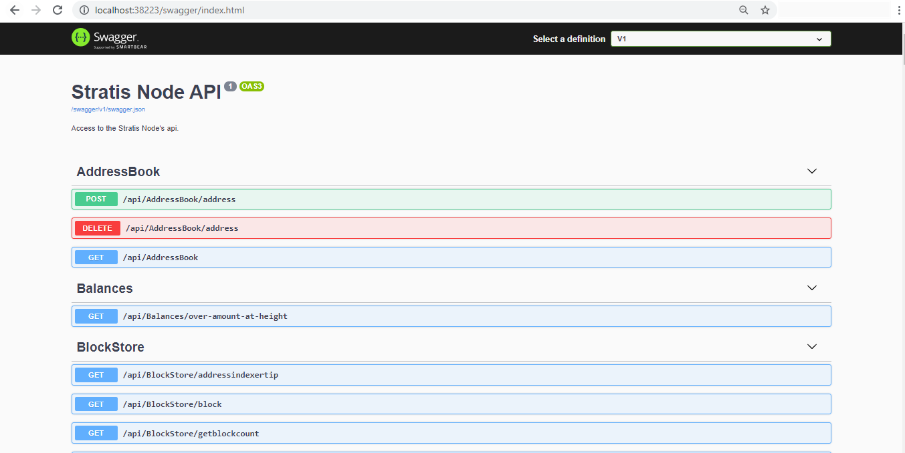

Setup Local Environment¶
A ‘Development Edition’ of the Cirrus Core Wallet has been made available to greatly simplify the local development process; this version is known as the “Private Net” version. This wallet is pre-configured to launch a new chain, providing a local development environment to deploy contracts and build solutions without any external interference.
The “Cirrus Core Private Net” wallet is essentially a GUI that interacts with an instance of the Stratis Full Node, specifically the ‘Stratis.CirrusMinerD’ project. The environment can be run in a headless manner on a remote machine by performing the following steps.
git clone https://github.com/stratisproject/StratisFullNode cd ./StratisFullNode/src/Stratis.CirrusMinerD dotnet run -devmode=miner
This guide will focus on utilizing the Cirrus Core GUI as this simplifies the contract deployment and overall management process.
If you would prefer to run the environment in Docker, you can follow the below guide:
Getting Started¶
Cirrus Core Private Net can be downloaded from the Cirrus Core repository and is available for all leading Operating Systems.
https://github.com/stratisproject/CirrusCore/releases/tag/1.6.1.0-privatenet
For the purpose of this tutorial, we will focus on using the Windows x64 instance of the Cirrus Core Private Net wallet.
Once downloaded, run the installer through to completion.
Starting a Node¶
Once Cirrus Core Private Net has been installed, you can now launch the wallet via the shortcut created on your desktop. This will start a node.
Interacting with the UI¶
You would have noticed that when launching the node via Command Prompt, an additional application appeared on your taskbar. This is the Cirrus Core GUI, which can be seen below for reference.
{kind=link}
In addition to the GUI, DevTools has been made available within the GUI so you can see what calls are being made to the respective API endpoints when interacting with the Cirrus Core GUI. As part of the Private Net Edition, wallets are automatically created to save you time; log into the wallet by using the username cirrusdev and password password as seen in the password text field.
{kind=link}
Note
Even though the Stratis Blockchain is built upon a UTXO model, to improve user experience vastly, we have introduced an account-based model look and feel to the Cirrus Core Private Net wallet. This change provides the end-user with the ability to interact with Smart Contracts in a more efficient manner.
Upon entering the password and logging into the wallet, you will be presented with the above screen, requesting you to select an address. Select the first address, Address[0] and continue.
Note
Initially, you may notice that there is no balance within the wallet that has been automatically created. The pre-mine will be allocated after the second block has been mined. The current block time is set at 16 seconds; it will not be long before you see a balance credited to the wallet.
You can see in the above image; you have 1,000,000 TCRS which you can utilize to deploy and call a contract for your development and testing purpose.
The Dashboard displays all information specific to your wallet. Since this is a local chain this is the only node currently running on the network, and all funds issued on-chain reside within this wallet.
There are several ways that the Stratis Full Node can be interacted with within the Cirrus Core UI; aside from basic wallet functions, there is also the ability to issue tokens and deploy and interact with Smart Contracts. If you are interested in other API’s that are available, the Swagger interface can be accessed via browse swagger. Swagger is utilized to provide a graphical representation of the APIs that are available on the Stratis Full Node. These APIs are fully documented on the Academy and can be accessed via the API Documentation section.
{kind=link}
Note
By default, only a single node can be running if utilizing the Cirrus Core Private Net Wallet. Additional nodes can be launched from the source code by passing the below parameters to the Stratis.CirrusMinerD project.
-port=<>
-signalruri=http://127.0.0.1:<>
-apiuri=http://127.0.0.1:<>
-datadir=<>
This concludes the network setup and configuration; you can now deploy a contract on the local network in Tutorial 2.